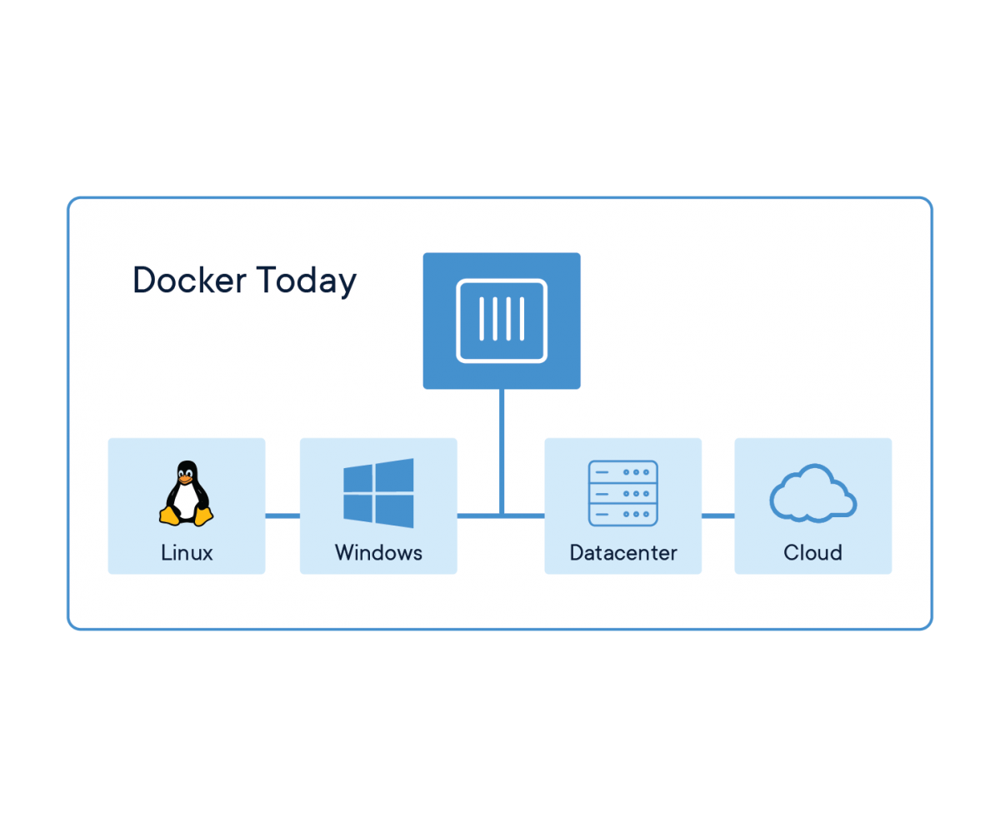

Docker, 깔끔하고 빠른 분석.연구.개발 환경 세팅
부제 : 데이터사이언티스트의 도커 사용기

- 이번 글에서는 저를 포함하여, 도커를 처음 접하는 사람들을 위해 도커(Docker)와 도커 이미지, 도커 컨테이너의 개념에 대해 살펴봅니다.
- 간단한 도커파일 작성 예제를 통해, 자신에게 맞는 환경 세팅을 따라 해 볼 수 있습니다.
1 | 오픈 소스 A 돌리려면, X, Y, Z 버전의 개발 언어와 라이브러리가 필요하다는데? |
여러분들은 분석, 연구, 개발 환경 세팅을 어떻게 하시나요? 다양한 방법이 있을 수 있겠고, 무엇보다 자신에게 가장 편한 방법이 제일 좋은 방법일 것 입니다. 본격, 업무 시작 전 책상을 정리하고 키보드와 마우스를 한번씩 털어주는 습관이 있는 저는 제 개인 맥북과 업무 PC, 분석 및 개발서버의 환경을 깔끔(?)(단, 오로지 제 관점에서의 깔끔)하게 하는 취향이고, 세 가지의 다른 OS 환경임에도 불구하고 동일한 환경세팅을 하고 싶었습니다.
이 니즈를 해결해 줄 도커. 도커내 이미지와 컨테이너의 개념을 살펴보겠습니다.
❗️Caution❗️
초보 도커er, 데이터사이언티스트 관점에서의 도커 활용기이기에, 오정보와 더욱 효율적인 방법이 있을 수 있습니다. 댓글을 통한 피드백을 주시면 매우 감사하겠습니다!
0. 도커 이전에 저는.
도입부에서 말씀드렸다시피, 환경의 가상화 및 추상화는 프로젝트 단위로 환경을 관리하고 깔끔(?)한 환경 세팅을 위한 필수요소입니다. 이를 위해 제 개인 맥북과 PC 에서는 Python 을 위한 Pipenv, Virtualenv, Autoenv C, C++ 를 위한 Compile 옵션과 Visual Studio의 project 단위 관리를 활용해 깔끔을 떨었습니다. 도커를 통해 이제 System level 까지 환경 추상화를 도전해보려고 합니다.
1. 도커(Docker)란?

도커를 한마디로 정의하면, 컨테이너 단위로 우리의 서비스와 환경을 패키징하고, 애자일(Agile)하게 동일한 환경을 제공 할 수 있게 하는 오픈 소스 프레임워크 입니다. 도커 컨테이너의 패키징 기능은 우리가 사용하는 개발 언어, 라이브러리 뿐만 아니라, 코드, 런타임, 시스템 설정, 커널 및 OS 까지 한 가지 혹은 몇 가지의 컨테이너로 패키징 할 수 있게 합니다. 도커를 사용하면, 분석가 및 데이터사이언티스트들은 다음과 같은 이점을 활용할 수 있습니다.
- 분석 및 개발 환경을 컨테이너를 통해 추상화하여, 동일한 환경을 제공
- 한 서버내에서 여러 인원이 작업을 수행할 때, VM과 같은 기존 가상환경보다 더욱 효율적인 리소스를 활용
- 여러 프로젝트를 진행하지만, 각각 다른 환경에서 수행되어야 할 때 컨테이너 단위로 각 환경을 관리
- 개발 환경과 배포 환경을 동일하고 빠르게 환경 설정
- 오픈소스와 라이브러리를 많이 사용하는 분석, 모델링 업무 특성상 OS 마다 다른 설치 방법을 고민할 필요 없음!
2. 도커 컨테이너(Docker container)란?

귀여운 도커 컨테이너
도커 컨테이너는 도커를 이루는 가장 기본 단위입니다. 위에서도 살펴보았듯이, 우리가 감싸려고 하는 어플리케이션, 개발환경을 패키징하는 추상 객체입니다. 기존 시스템 OS와 독립된 공간에서 모든 프로세스가 진행될 수 있게끔하는 가상화 기술입니다.
도커 컨테이너가 기존의 Virtual Machine 과 다른 점은 전체 호스트 OS를 가상화하여 활용할 수 있다는 점입니다. Virtual Machine 은 게스트 OS(가상화한 사용자)가 호스트 OS 위에 올라가 동작하여, 시스템 리소스를 제한적으로 사용할 수 밖에 없는 단점이 있는 반면에, 도커의 경우 호스트 OS 전체를 사용하여 (게스트 OS 개념이 없음) 시스템 리소스를 전부 사용 할 수 있습니다.

가상환경을 사용했을 때 시스템구조, 이미지 출처 : docker.com

도커를 사용했을 때 시스템구조, 이미지 출처 : docker.com
3. 도커 이미지(Docker Image)란?
](Untitled.png)
이미지 출처: https://kimck.tistory.com/entry/Docker-File-Docker-Image를-만들기-위한-명세서
도커 이미지는 도커 컨테이너의 설계도입니다. 도커 이미지를 통해 컨테이너 내부에 어떤 환경을 포함하여 패키징 할 것인지 계획을 세웁니다. 도커 이미지 생성 방법은 (1) DockerHub 를 활용해 Github처럼 공개된 이미지 소스를 활용하는 방법이 있고, (2) Dockerfile 을 통해 도커 이미지를 빌드하는 방법이 있습니다. 다음 예제에서 간단한 Dockerfile 작성을 통해 이미지를 만들고 Python과 jupyter 환경을 컨테이너화 해보겠습니다.
4. 일단 만들어보자!
도커를 설치하는 자세한 방법은 이 글에서는 생략하도록 하겠습니다. 다음과 같은 방법으로 쉽게 설치 할 수 있으니, 자신의 환경에 맞게 설치하시고 다음을 진행해주세요!
Linux : yum, apt 등 OS 에 맞는 방법으로 설치해주세요.
Mac : Intel chip과 Apple M1 chip 에 따라 각각 설치해주세요.
Window : Docker Desktop for Windows 를 설치해주세요 (Window os 종류에 맞게 WSL, Hyper-V 기반에 맞는 docker 설치를 진행해 주세요)
본 실습 예제의 결과물은 Docker 환경에서 (1) Python3.7 , (2) Jupyter Notebook , (3) Numpy, Pandas 라이브러리 설치 (4) 호스트 파일시스템과 도커 파일시스템을 연결 설정까지 이루어지겠습니다.
4.1 도커 실행
- 도커가 정상적으로 설치 되었으면, 도커의 실행 여부를 확인하고 도커를 켜고 끄는 방법을 알아봅니다.
1 | # 도커 실행 여부 확인 |
4.2 Dockerfile 작성
먼저, 다음과 같이 작성하고 현재 실습 디렉토리에 Dockerfile 로 저장해 줍니다.
1 | # Dockerfile |
FROM: DockerHub 에 공개되어 있는 오픈 이미지를 우리 이미지의 base 로 하는 의미입니다. python3.7 버전의 오픈 이미지를 바탕으로 우리 이미지를 빌드할 것입니다.RUN: 도커 이미지가 빌드되고, 수행되는 명령절입니다. Python 기반의 분석, 개발환경 세팅을 위하는 것인 만큼 pip를 활용해 해당 패키지를 설치해 줍니다.EXPOSE: 우리는 jupyter 환경을 설치할 예정이므로, jupyter 가 사용하는 8888 번 포트를 개방해줍니다.CMD: 컨테이너 내부 shell에서 수행되는 커맨드입니다. 배포 및 운용을 위한 컨테이너라면 CMD python3~.py 를 해주겠죠. 다만, 우리는 컨테이너를 계속 실행된 상태에서 분석 및 개발을 위한 환경이기 때문에 컨테이너 동작 이후 종료 되지 않아야 합니다. 따라서 /dev/null page 를 계속 읽어드리는 명령을 통해 환경 유지를 할 수 있습니다.
4.3 Docker image 빌드
위에서 작성한 Dockerfile을 바탕으로 아래 명령어를 통해 도커 이미지를 빌드해 줍니다.
1 | # $ docker image builld -t 이미지명:태그명 Dockerfile경로 |
-t: 생성될 이미지에 태그를 붙여줍니다. 태그를 생략하게 되면, :latest 가 default 로 붙습니다.- Dockerfile 경로 : docker image build 명령은 default 로 현재 디렉토리의 Dockerfile 을 찾습니다. 파일 디렉토리와 파일명이 다른 도커파일을 지정하고 싶다면,
-f을 통해 경로/파일명을 다르게 설정할 수 있습니다.
4.4 Docker container 실행
Docker image 를 바탕으로 도커 컨테이너를 실행해 줍니다. 도커 컨테이너 실행시 주의할 점이 몇가지 있습니다. 먼저 도커는 안정적인 배포와 운영을 위해 한번 실행된 컨테이너의 설정과 환경을 변경하기 쉽지 않습니다. 아니, 설정과 환경을 변경할 수 없습니다. (시도하지 마세요. 저처럼 너무나 고생하게 됩니다.) 따라서 컨테이너를 실행 할 때, 고려하는 요소를 모두 포함하여 실행시켜주는 것이 중요합니다.
1 | # $ docker run (각 종 옵션) DockerImage명 |
-d: Docker container 실행을 백그라운드에서 실행하는 옵션입니다. 도커는 안정적인 운영을 위해 foreground 실행을 하게 되면 커맨드lock 이 걸리게 됩니다.—-name: 실행되는 컨테이너의 이름 설정-p: 호스트 서버의 포트와 컨테이너 포트 연결. 우리는 jupyter notebook 이 사용할 8888번 포트를 서로 연결해 줍니다.-v: 이 옵션을 통해 컨테이너 내부에서 저장되는 파일시스템과 호스트 서버의 파일시스템을 연결해 줍니다. 호스트 파일시스템을 컨테이너에 마운트 시킨다는 개념으로 생각합니다.호스트서버파일시스템:컨테이너내부파일시스템- python-jupyter:stable : 위에서 생성한 이미지명:태그
4.5 Docker container shell 접속
Docker container 가 정상적으로 만들어졌다면, container 내부로 들어가 jupyter notebook 을 실행해 주어야 합니다. container 내부 shell 에 접속하는 방법은 다음과 같습니다.
1 | $ docker exec -it python-jupyter-stable bash |
위 커맨드를 이용해 컨테이너 내부에 접속해, jupyter notebook 을 실행해부면 됩니다.
1 | $ jupyter notebook --allow-root & #background에서 jupyter notebook 실행 |
5. 마치며
간단한 실습 예제를 통해 다양한 OS 환경에서도 동일한 분석 및 개발 환경 세팅에 대해 알아보았습니다. 위에서 작성한 Dockerfile 만 있다면, 제가 어느 환경에서 작업하더라도 docker image build, docker run 을 통해 안정적인 분석과 연구 개발을 진행 할 수 있습니다. 본 글을 통해, 도커의 필요성과 도커의 개념을 이해하고, 도커를 처음 접하는 분들에게 본격적인 도커의 소개가 되었으면 하는 바램입니다. 저 역시, 앞으로 도커를 이용해 더욱 Agile하고 고급 환경구축을 시도해 볼 것이며, 새롭게 알게 되는 내용들은 알기쉽게 정리하여 본 블로그와 PAP 커뮤니티를 통해 소개해드릴 예정입니다.